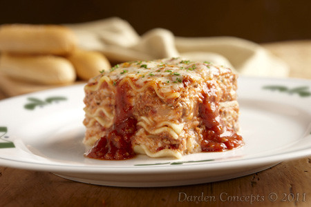

Home
Lasagna

Description
If everything italians consider good food gets thrown into an oven form and then baked for some time, the result is lasagna.
It combines pasta with a flavourful tomato-meat sauce, plenty of parmesan-based cheese sauce, and mozzarella on top of it all.
Fresh from the oven, it's pure pleasure in square-shaped pieces - it can equally well be eaten cold.
Ingredients
You will need:
- lasagna pasta slices
- minced meat
- onions
- tomato sauce
- parmesan
- mozzarella
- flour
- butter
- milk
- bouillon
- herbs and spices
And, of course, an oven form!
Steps
-
Fry the meat in a frying pan, add salt and pepper. In the mean time, chop the onion. Add the onion to the pan and fry until glassy.
-
Transfer the meat-onion-mix to a pot, add bouillon and tomato sauce, as well as herbs & spices. Boil everything at medium heat for at least 30 minutes or more.
-
For the unorthodox cook,
vegetables - spinach, small brokkoli, ... - might be added to the mix at this stage.
-
In the mean time, make a sauce base from flour and butter, around 3 tablespoons each. Once solid, add milk to the mix and stir until a creamy consistency of the sauce is reached.
Add parmesan, salt, peppar, and nutmeg to the mournay sauce.
-
Once you are happy with the tomato sauce, combine sauce - pasta - mournay sauce (in this order) in layers until either your oven form is filled, or you run out of ingredients.
-
Bake at 200°C for 40 minutes. Add mozzarella on top of the dish after roughly half the baking time.
-
Serve with a side salad, red wine, and fresh basil. Voilà!